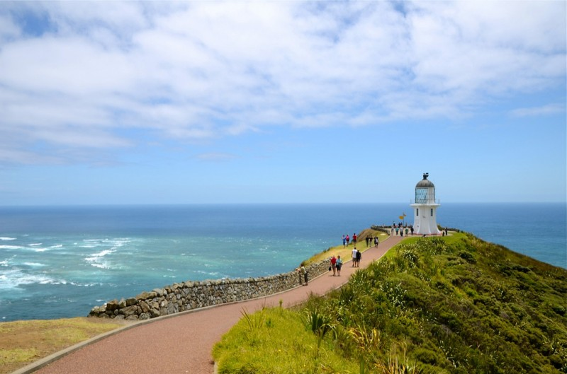

My Camera Gear For Traveling, One Year Update
When I went to Argentina in January of 2011, I had two cameras with me: the Canon EOS 40D and some type of Canon Powershot. I left Canada with the idea that it would be a pain in the butt to carry around a whole pile of lenses, so I took only a 28mm prime lens.
While it ended up being relatively light, having only a single focal length lens significantly impacted my ability to take the photos I wanted to. Other than one or two shots that turned out well, I didn't really walk away from Argentina with the photos that I thought accurately represented what it was like to be down there.
The Canon Powershot camera was good in a pinch, and I think I used it for videos a few times, but I really find the poor performance of those types of cameras in low to moderate light conditions to be a huge negative after using an SLR. And in most situations I can make due with my iPhone where I would be inclined to pull out a pocket camera, so the Powershot stayed at home mostly.
When I got to New York City in April of 2011, I decided I either had to buy a few new lenses for the SLR or get some other type of camera gear before heading to Europe. Since my Canon EOS 40D was already a few years old, I just decided to sell everything on Craigslist in New York and buy something new. I think I managed to sell it all for like $600, so I put that money towards an Olympus E-PL2 u4/3 camera and the coveted Panasonic Lumix 20mm f/1.7 lens. I now have update camera gear for traveling that works quite well for me.
Without a doubt, the Olympus E-PL2 camera was a huge step up from the Canon Powershot camera. When outside with lots of light I would say it's nearly impossible to tell the difference between a shot from the E-PL2 and the 20mm lens and that of a high-quality SLR with nice glass on it. That's how good those cameras are.
And while low-light performance is better than the Canon Powershot, it's still not great, and ultimately one of the trade-offs you have to accept with a camera like this. I also found the video mode to be a bit screwy - often the focus locks onto the wrong object during a movie and refuses to refocus on the right object.
When I got back to Vancouver in the summer I gave the Canon Powershot to my sister to use, since it had basically sat in my bag for most of the year. I then decided that I really wanted another SLR to take with me next time. Since I had been thinking of switching to Nikon for quite a while, I went out and bought the Nikon D7000 camera, which was (and still is) one of Nikon's most popular cameras.
When I left for Thailand in September of 2011 I took two lenses with me - the Nikon 50mm f/1.4 lens and the Sigma 17-50mm f/2.8 lens. For the most part this has been a pretty good combination. That said, I have had an ongoing focus issue with my setup, where often my camera refuses to focus lock onto anything in the frame when in a wide-angle position on the 17-50mm lens. Since the default settings on the Nikon make it so the shutter button doesn't work until the focus is locked, I have had a few scenarios where I've wanted to take a photo of something and haven't been able to. In those scenarios I now disable the shutter-lock feature (which allows me to take a photo even though the camera doesn't think it is in focus), but there's still something not quite right. I suspect I may end up sending the lens away for an inspection at some point, but probably not until I get back from my next trip.
Between the 17-50mm lens, the 50mm f/1.4 lens and my Olympus E-PL2 with the 20mm f/1.7 (which I really enjoy taking out and doing street photography with), I came away with some photos I really liked from Southeast Asia and New Zealand.
[caption id="attachment_2679" align="aligncenter" width="800" caption="Cape Reinga, New Zealand"][/caption] [caption id="attachment_2681" align="aligncenter" width="800" caption="Tanah Lot sea-temple, Bali, Indonesia"] [/caption]
[/caption]
{kind=link}
[caption id="attachment_2683" align="aligncenter" width="800" caption="Wish Lanterns, Near Chiang Mai, Thailand"] [/caption]
[/caption]
New Purchases for 2012
I'm heading out shortly for Las Vegas, and then onwards to Cape Town, South Africa. South Africa is a place I've definitely wanted to see for a while, but given how far it is away from Vancouver, it hasn't been high on the priority list. But since two of my friends are getting married there in March, I decided to head over and spend a few weeks there.
I've photographed a few weddings over the years, and while it's a bit stressful (as the official photographer), I find it really forces you to improve your skills quickly. So while I'm going to be at the wedding as guest (which is a nice change), I thought it would be fun to migrate to the shadows from time to time and try to snag a few shots on my own.
When I used to shoot Canon glass, my favourite lens was probably the Canon EOS 70-200mm f/2.8L lens. It's a professional grade lens that takes absolutely stunning photos. In fact, many of my favourite portrait shots from that era were taken with the 70-200mm lens. Here are a few examples.
[caption id="attachment_2686" align="aligncenter" width="800" caption="Feist, Victoria BC, Canada"] [/caption]
[/caption]
[caption id="attachment_2691" align="aligncenter" width="800" caption="Jessie Farrell"] [/caption]
[/caption]
So the other day I went out and made my first purchase, the Nikon AF-S 70-200mm f/2.8 ED VR II lens.
[caption id="attachment_2694" align="aligncenter" width="800" caption="Nikon AF-S Nikkor 70-200mm f/2.8G ED VR II"] [/caption]
[/caption]
Since this lens also contains an image-stabilizer, it's actually a pretty significant step-up from the Canon lens I used to own. At $2,200 though, it's definitely not a cheap investment. It's also a monster in terms of size and weight, but I'm sure it'll be worth it due to the image quality. So I'll get my first chance to use this lens in South Africa. When I get back to South America I'm hoping to get back into fashion photography as well, and this lens comes in very handy for that purpose as well.
The second item I bought was the Nikon 35mm f/1.8 lens. On a crop body camera like the D7000, I actually find a 35mm lens is far more versatile than the standard 50mm lens that almost everyone owns (including myself). On the D7000 the 35mm lens has a field of view of approximately 50mm, so it's basically a normal lens. And while I usually have the 17-50mm lens on when I'm just out walking around, the 35mm will probably make a few appearances in some pubs and indoor events where I don't necessarily want to use a flash.
The last item I purchased was a standalone speedlight for the D7000. If you want to take really great portraits, then a flash is pretty much a requirement in my opinion. Even if you're shooting outdoors in full light, a little bit of fill flash definitely helps with the facial shadows that can sometimes detract from the overall photo. There are definitely scenarios when I would want to do portraits without a flash, but for wedding or fashion photography I personally would want one sitting on my camera at all times just in case.
The only potential issue is that the flash I bought is a tad underpowered for the 70-200mm focal range. I suspect it'll perform adequate enough though, but I won't know until I get out and shoot a few rounds of photos with it.
Camera Logistics
Of course, it's pretty hard to pack light if you're bringing a pile of camera gear. That said, I've done pretty well with a 40L backpack for almost all of my trips. I put all my gear and my laptop into my backpack the other day to test it out, and it came in at 21 lbs. That's definitely heavier than I would like it, but it's not massively heavy, and represents a worse-case scenario (when I do side trips with my backpack, I can just take one lens for example).
I'll do a full post on how I pack my backpack soon, but ultimately I have my laptop and iPad in a proper laptop shoulder bag inside of my backpack, and have all my camera gear in a Crumpler bag inside as well. That means on airlines with hardcore weight restrictions (Air Asia comes to mind, they have a 15 lb carry-on limit), I can simply pull my laptop bag out, stuff some of my lighter gadgets into it, and declare that as my one-personal item (which I've never had weighed). That usually knocks 7 lbs or so off of the weight of my backpack (which in this case would bring it down to 14 lbs or so), and brings me under whatever restrictions they usually have (since my backpack is actually the proper physical dimensions for carry-on on all airlines I've been on).
Whether or not taking all this stuff with me will be worthwhile, only time will tell. But in truth I haven't really been into photography in a big way for almost three or four years now, so having a proper kit with really nice lenses is pretty exciting for me, especially as I travel around the world. And like all my other camera gear, I pay extra money on insurance so I can get full replacement value. So while breaking a lens or having it stolen would suck, I can get my money back on any item so I'm not overly worried.
I'm off to Las Vegas in a few days, and will hopefully get to test out some of this gear then.